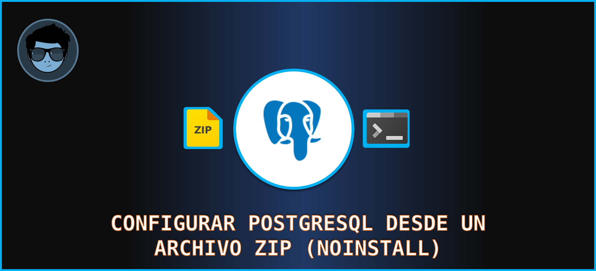
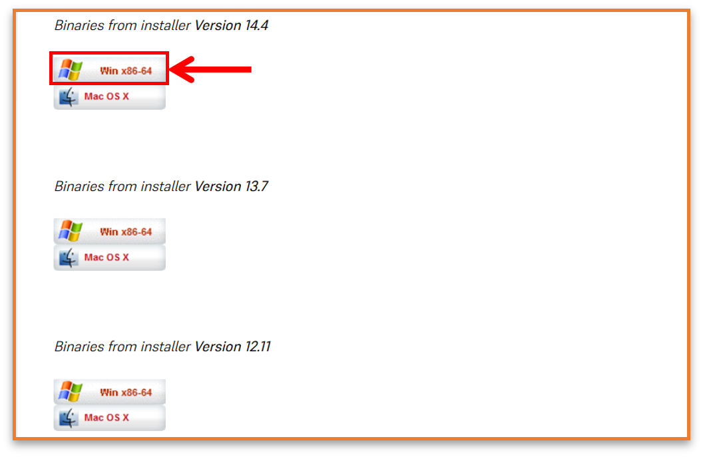
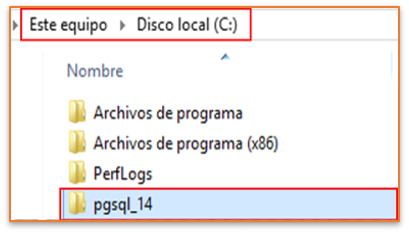

CONTENIDO⚓
- Descargar el zip
- Extraer el contenido
- Crear carpeta para las configuraciones
- Configuración inicial
- Lanzar y detener el servidor
- Configurar PostgreSQL como un servicio
- Conectarse al servidor de PostgreSQL
- Operaciones básicas en PostgreSQL
SDESCARGAR ARCHIVO ZIP⚓
Lo podemos descargar desde la siguiente web ▶ aquí.
Selecciona alguna versión de acuerdo a la arquitectura y plataforma de tu equipo.

EXTRAER CONTENIDO⚓
En mi caso lo voy a descomprimir en la siguiente ubicación “C:\pgsql_14”

⚓ CREAR CARPETA DATA⚓
Debemos crear una carpeta donde se almacenarán las configuraciones de nuestro servidor. También se guardarán los datos, usuarios, etc. En mi caso la voy a crear en el mismo nivel en la siguiente ubicación “C:\pgsql_data“

⚓ CONFIGURACIÓN INICIAL⚓
Configuramos el usuario, la contraseña, encriptación, y la codificación para la base de datos.
Nos cambiamos al directorio de instalación y entramos a la carpeta bin:
1 |
cd C:\pgsql_14\bin
|
Y ejecutamos el siguiente comando:
1 |
initdb.exe -D C:\pgsql_data -U postgres -W -E UTF8 -A scram-sha-256
|
- -D: especifique el directorio de almacenamiento del clúster de bases de datos en mi caso (C:\pgsql_data).
- -U postgres: crea al superusuario como postgres.
- -W: solicita la contraseña del superusuario.
- -E UTF8: crea la base de datos con codificación UTF-8.
- -A scram-sha-256: habilita la autenticación de contraseña.

⚓ INICIAR Y DETENER SERVIDOR DE POSTGRESQL⚓
Para ver el estado del servidor y ver si se encuentra en ejecución o no:
1 2 3 |
pg_ctl.exe -D C:\pgsql_data -l logfile status
# Otra opción es
pg_isready.exe
|
1 |
pg_ctl.exe -D C:\pgsql_data -l logfile start
|
Para detener el servidor:
1 |
pg_ctl.exe -D C:\pgsql_data stop
|
1 |
pg_ctl.exe -D C:\pgsql_data stop
|
Nota: cualquier acción con el servidor es obligatorio indicar el directorio de datos
⚓ REGISTRAR COMO SERVICIO EN WINDOWS⚓
Para ejecutar este comando debe abrir un CMD como administrador:
1 |
pg_ctl.exe register -D C:\pgsql_data -N "postgres14"
|

Para ejecutar después el programa cliente psql desde cualquier ubicación establecemos esa variable de entorno puede ser con CMD normal o como administrador:
1 |
setx PATH "%path%;"C:\pgsql_14\bin\
|

Para eliminar el servicio abrimos una sesión CMD como administrador y ejecutamos el comando:
1 |
sc delete postgres14
|
⚓ CONECTARSE AL SERVIDOR DE POSTGRESQL⚓
Iniciar sesión en el servidor PostgreSQL⚓
Usando el cliente psql.exe para conectarnos a nuestro servidor. Lo siguiente es llamar al
programa e iniciar sesión indicando el usuario y luego nos pedirá el password.
1 |
psql -U postgres
|
Cuando se le solicite la contraseña, ingrese la contraseña que configuró durante la instalación. El prompt nos indica que estamos conetado con éxito y listo para realizar sentencias SQL.

⚓ OPERACIONES BÁSICA EN POSTGRESQL⚓
- Para listar los usuarios, use el comando
\du - Para enumerar todas las bases de datos, use el comando
\listo\l. - Para salir solo escribimos
exito\q. - Para cambiar a una nueva base de datos, use el comando
\connect <database>o\c <database name>. - Para mostrar tablas de una base de datos, use el comando
\dto\dt+. - Para realizar una copia de seguridad o un volcado de la base de datos, use el comando:
pg_dump.exe -U postgres -d <database name> -f <path>\backup.sql - Para importar un archivo
.pgsqlo.sqlexistente al servidor de la base de datos, use el siguiente comando.
psql.exe -h <hostname> -U postgres < <path>\backup.sql